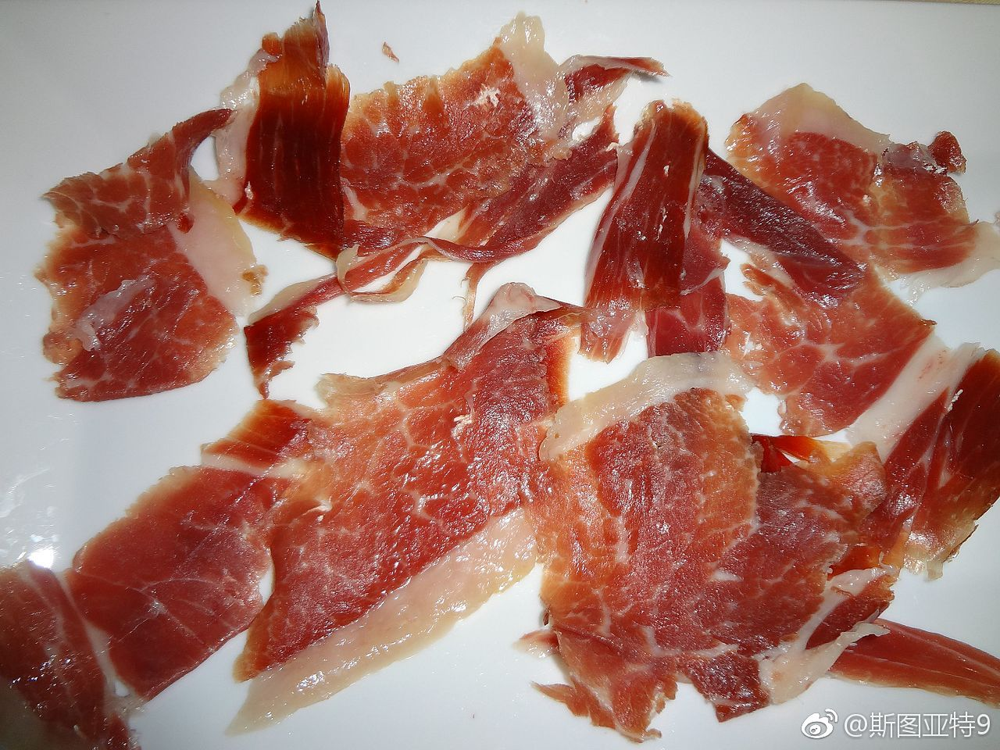

几年前在西班牙旅行时候对偶然在街边小店吃到的火腿肉印象深刻。后来回美国后看到超市里卖的Prosciutto长得很像，虽然很贵但是咬牙买过两次。回去吃了之后觉得虽然味道也不差但和在西班牙吃的还是有差距。我一直以为是美国做的不正宗。前一段时间突然想起来了那个味道，在网上查了一下，才发现在西班牙吃的那两种火腿肉是
Jamón serrano以及Jamón ibérico，而Prosciutto是意大利的，并不完全一样。网上说这两种西班牙火腿在美国买不到好的，因为一方面美国批准进口的猪来源味道不怎么样，另一方面制作方法在USDA看来风干时间太短。也有人说是因为美国的保护主义。当然是几年前的文章了，也不知道现在是不是还是这样。
Jamón serrano以及Jamón ibérico，而Prosciutto是意大利的，并不完全一样。网上说这两种西班牙火腿在美国买不到好的，因为一方面美国批准进口的猪来源味道不怎么样，另一方面制作方法在USDA看来风干时间太短。也有人说是因为美国的保护主义。当然是几年前的文章了，也不知道现在是不是还是这样。
- 